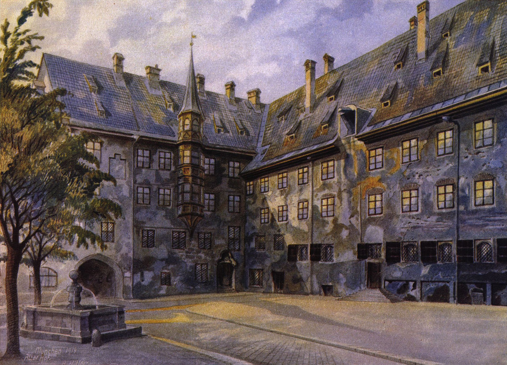
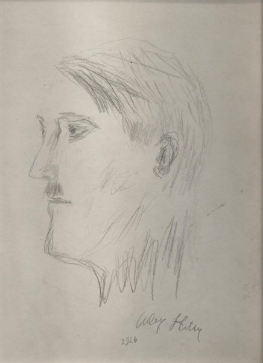

Внутренний двор
старой резиденции
Мюнхен. Работа, приписываемая Адольфу Гитлеру; в описании Commons указана как акварель, находящаяся в коллекции U.S. Army Center of Military History.
Карточка объекта ↗Исторический каталог · 1909—1914
Небольшая коллекция акварелей и рисунков, рассматриваемая не как портрет личности, а как документ эпохи, вопрос атрибуции и границы музейного взгляда.
Исследовать каталог↘
Обе работы находятся в открытом доступе через Wikimedia Commons, однако сама атрибуция и история происхождения произведений требуют осторожного чтения.
Мюнхен. Работа, приписываемая Адольфу Гитлеру; в описании Commons указана как акварель, находящаяся в коллекции U.S. Army Center of Military History.
Карточка объекта ↗
Поздняя работа, опубликованная как автопортрет. В каталоге она показана только как исторический объект, без художественной оценки или оправдания политического наследия автора.
Карточка объекта ↗Венская академия изобразительных искусств дважды отклонила кандидатуру Гитлера. По опубликованным историческим очеркам, его рисунки сочли неудовлетворительными.
В Вене он продавал небольшие акварели и виды архитектуры, часто работая с мотивами, скопированными с открыток. Коммерческий успех был ограниченным.
После Первой мировой войны художественная практика прекратилась. Сохранившиеся и приписываемые ему работы стали объектами споров, торгов и подделок.
Такой каталог не отделяет изображения от истории их автора. Он показывает, как музейные предметы получают смысл через контекст, provenance и проверку подлинности.
Этот проект не прославляет Адольфа Гитлера, нацистскую идеологию или связанные с ними преступления. Он использует художественные объекты как повод говорить об исторической памяти, неустойчивой атрибуции и механике культурного мифа.
Формулировка «приписывается» используется намеренно: независимые сообщения о торгах и конфискациях показывают, что часть подобных работ становилась предметом расследований о возможной подделке.